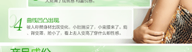
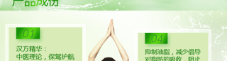
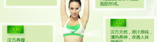
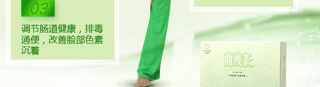
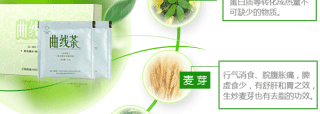
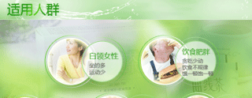
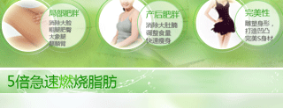
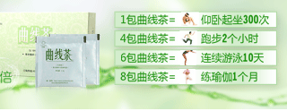
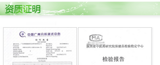
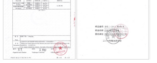

汉方典故：荷叶苦涩，平，归肝、脾、胃、心经。
【功效】有清暑利湿、升发清阳、凉血止血等功效。

亦可瘦牌曲线茶是以结合中华五千年中医理论为基础，以尖端技术提取莱菔子、荷叶、决明子、麦芽等天然植物成分，研制成新一代科学又安全





A款一盒体验装：清理身体排除毒素，解决便秘，淤积的毒素很快就能畅快的排除，循环系统恢复正常。 汉方草本曲线茶温和持久，能激活沉睡的机体，令健康从“内”开始！
B款三盒装：轻松瘦身7-15斤。一个疗程内逐渐改善脂肪堆积现象，保障新陈代谢正常运行，全身的脂肪堆积和浮肿消除，明显感觉全身瘦一圈,腰部、腹部、腿部也会瘦上一大圈!

使用效果：60天用量,健康瘦身20斤―25斤.代谢提高,加速分解,燃烧顽固脂肪,彻底快速的消除全身各个部位的脂肪堆积!皮肤红润有光泽,色斑消失！
D款九盒装终极瘦身，从根源上解决肥胖,巩固瘦身不反弹,从此和肥胖绝缘,拥有美丽健康身姿,并能促进减肥后皮肤健康,增加皮肤自身体屏障.